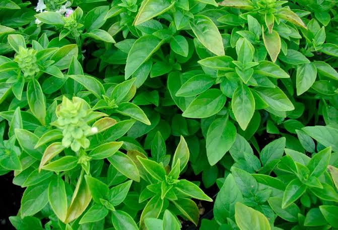

Albahaca
Ocimum basilicum
La albahaca es una hierba aromática con hojas ovaladas y flores blancas o moradas.
Propiedades y Beneficios
La albahaca es rica en **antioxidantes** y compuestos antiinflamatorios como el eugenol. Posee propiedades **digestivas**, **antibacterianas** y **antiespasmódicas**.
Es excelente para mejorar la digestión, reducir el estrés, aliviar dolores de cabeza leves y como repelente natural de insectos. También se utiliza para mejorar la salud cardiovascular.
Uso Tradicional Maya
En la cultura maya, la albahaca era considerada una planta sagrada utilizada en rituales de purificación y protección espiritual. Era empleada para tratar problemas digestivos y como ofrenda a los dioses. Los mayas la cultivaban en sus huertos sagrados por sus propiedades curativas y aromáticas.
Receta: Té Digestivo
- Ingredientes: 1 taza de agua hirviendo y 1 cucharada de hojas frescas de albahaca.
- Preparación: Colocar las hojas en una taza y verter el agua hirviendo. Tapar y dejar reposar durante 5-10 minutos.
- Aplicación: Colar y beber caliente o frío. Consumir después de las comidas para mejorar la digestión. Se puede endulzar con miel si se desea.